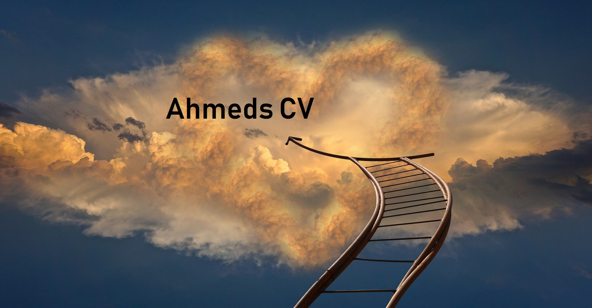
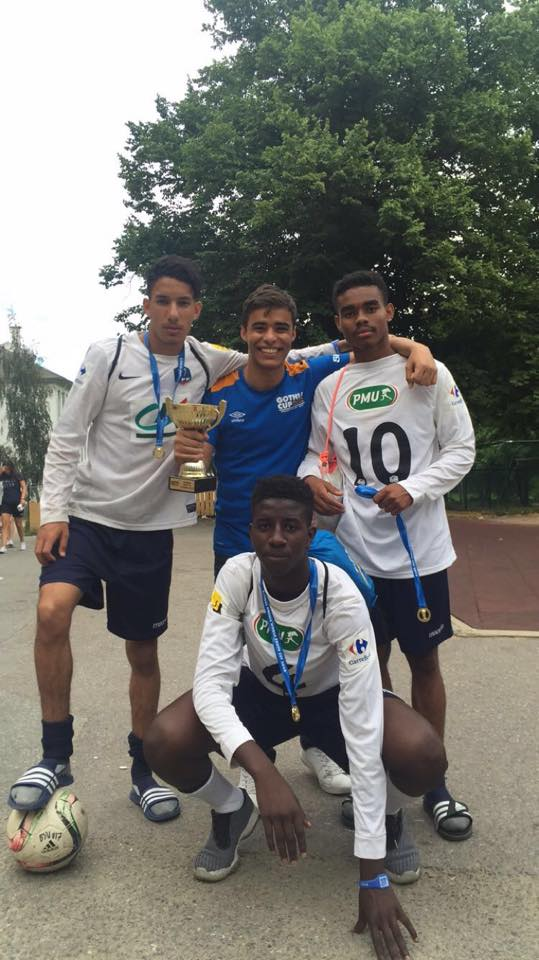

Här kommer ni lära känna mig bättre
 Hej! Mitt namn är Ahmed Hussein.Jag är en omtänksam, ambitiös och kreativ person som ser positivt på livet. Jag har ett stort engagemang i de arbeten jag utför och tycker om att ta ansvar och utföra uppgifter på allra bästa sätt. Som person är jag rättvis, tycker om att diskutera och kompromissa med andra människor. Viktiga element i livet är att vara öppensinnad och positiv. Inte bara för andras skull utan även för min egen. I arbetslivet är det även viktigt att kunna ta ansvar för sina handlingar och vara pålitlig.
